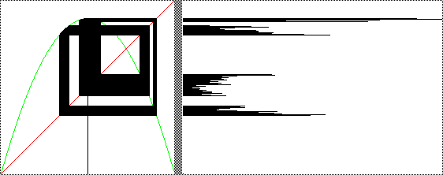

|  |
| s = 3.58 The histogram appears to consist of four islands consisting of about the same number of pixels (taking into account the length of the hsitogram lines). So in some sense, we could think of this as a noisy 4-cycle. Probably the orbit is chaotic, restricted to these four bands. However, by examining the histograms alone, we cannot be sure we aren't looking at a 16384-cycle, for example. Histograms can tell some things, but not all things. |